The passing of time is important to the kernel. A large number of kernel functions are time-driven, as opposed to event-driven.1 Some of these functions are periodic, such as balancing the scheduler runqueues or refreshing the screen. They occur on a fixed schedule, such as 100 times per second. The kernel schedules other functions, such as delayed disk I/O, at a relative time in the future. For example, the kernel might schedule work for 500 milliseconds from now. Finally, the kernel must also manage the system uptime and the current date and time.
1 More accurately, time-driven events are also event-driven—the event being the passing of time. In this chapter, however, we single out time-driven events because of their frequency in and importance to the kernel.
Note the differences between relative and absolute time. Scheduling an event for 5 seconds in the future requires no concept of the absolute time—only the relative time (for example, 5 seconds from now). Conversely, managing the current time of day requires the kernel to understand not just the passing of time but also some absolute measurement of it. Both of these concepts are crucial to the management of time.
Moreover, the implementation differs between how events that occur periodically and events the kernel schedules for a fixed point in the future are handled. Events that occur periodically—say, every 10 milliseconds—are driven by the system timer. The system timer is a programmable piece of hardware that issues an interrupt at a fixed frequency. The interrupt handler for this timer—called the timer interrupt—updates the system time and performs periodic work. The system timer and its timer interrupt are central to Linux and a large focus of this chapter.
The other focus of this chapter is dynamic timers, the facility used to schedule events that run once after a specified time has elapsed. For example, the floppy device driver uses a timer to shut off the floppy drive motor after a specified period of inactivity. The kernel can create and destroy timers dynamically. This chapter covers the kernel implementation of dynamic timers, and the interface available for their use in your code.
Certainly, the concept of time to a computer is a bit obscure. Indeed, the kernel must work with the system’s hardware to comprehend and manage time. The hardware provides a system timer that the kernel uses to gauge the passing of time. This system timer works off of an electronic time source, such as a digital clock or the frequency of the processor. The system timer goes off (often called hitting or popping) at a preprogrammed frequency, called the tick rate. When the system timer goes off, it issues an interrupt that the kernel handles via a special interrupt handler.
Because the kernel knows the preprogrammed tick rate, it knows the time between any two successive timer interrupts. This period is called a tick and is equal to 1/(tick rate) seconds. This is how the kernel keeps track of both wall time and system uptime. Wall time—the actual time of day—is important to user-space applications. The kernel keeps track of it simply because the kernel controls the timer interrupt. A family of system calls provides the date and time of day to user-space. The system uptime—the relative time since the system booted—is useful to both kernel-space and user-space. A lot of code must be aware of the passing of time. The difference between two uptime readings—now and then—is a simple measure of this relativity.
The timer interrupt is important to the management of the operating system. A large number of kernel functions live and die by the passing of time. Some of the work executed periodically by the timer interrupt includes
• Updating the system uptime
• Updating the time of day
• On an SMP system, ensuring that the scheduler runqueues are balanced and, if not, balancing them (as discussed in Chapter 4, “Process Scheduling”)
• Running any dynamic timers that have expired
• Updating resource usage and processor time statistics
Some of this work occurs on every timer interrupt—that is, the work is carried out with the frequency of the tick rate. Other functions execute periodically but only every n timer interrupts. That is, these functions occur at some fraction of the tick rate. The section “The Timer Interrupt Handler” looks at the timer interrupt handler.
The frequency of the system timer (the tick rate) is programmed on system boot based on a static preprocessor define, HZ. The value of HZ differs for each supported architecture. On some supported architectures, it even differs between machine types.
The kernel defines the value in <asm/param.h>. The tick rate has a frequency of HZ hertz and a period of 1/HZ seconds. For example, by default the x86 architecture defines HZ to be 100. Therefore, the timer interrupt on i386 has a frequency of 100HZ and occurs 100 times per second (every one-hundredth of a second, which is every 10 milliseconds). Other common values for HZ are 250 and 1000, corresponding to periods of 4ms and 1ms, respectively. Table 11.1 is a complete listing of the supported architectures and their defined tick rates.
Table 11.1. Frequency of the Timer Interrupt
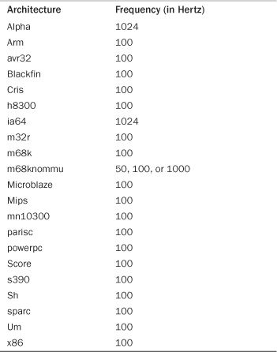
When writing kernel code, never assume that HZ has any given value. This is not a common mistake these days because so many architectures have varying tick rates. In the past, however, Alpha was the only architecture with a tick rate not equal to 100Hz, and it was common to see code incorrectly hard-code the value 100 when the HZ value should have been used. Examples of using HZ in kernel code are shown later.
The frequency of the timer interrupt is important. As you already saw, the timer interrupt performs a lot of work. Indeed, the kernel’s entire notion of time derives from the periodicity of the system timer. Picking the right value, like a successful relationship, is all about compromise.
HZ ValueStarting with the initial version of Linux, the i386 architecture has had a timer interrupt frequency of 100 Hz. During the 2.5 development series, however, the frequency was raised to 1000 Hz and was (as such things are) controversial. Although the frequency is again 100 Hz, it is now a configuration option, allowing users to compile a kernel with a custom HZ value. Because so much of the system is dependent on the timer interrupt, changing its frequency has a reasonable impact on the system. Of course, there are pros and cons to larger versus smaller HZ values.
Increasing the tick rate means the timer interrupt runs more frequently. Consequently, the work it performs occurs more often. This has the following benefits:
• The timer interrupt has a higher resolution and, consequently, all timed events have a higher resolution.
• The accuracy of timed events improves.
The resolution increases by the same factor as the tick rate increases. For example, the granularity of timers with HZ=100 is 10 milliseconds. In other words, all periodic events occur along the timer interrupt’s 10 millisecond period and no finer precision2 is guaranteed. With HZ=1000, however, resolution is 1 millisecond—10 times finer. Although kernel code can create timers with 1-millisecond resolution, there is no guarantee the precision afforded with HZ=100 is sufficient to execute the timer on anything better than 10-millisecond intervals.
2 We use precision here in the computer sense, not the scientific. Precision in science is a statistical measurement of repeatability. In computers, precision is the number of significant figures used to represent a value.
Likewise, accuracy improves in the same manner. Assuming the kernel starts timers at random times, the average timer is off by half the period of the timer interrupt because timers might expire at any time, but are executed only on occurrences of the timer interrupt. For example, with HZ=100, the average event occurs +/– 5 milliseconds off from the desired time. Thus, error is 5 milliseconds on average. With HZ=1000, the average error drops to 0.5 milliseconds—a tenfold improvement.
HZThis higher resolution and greater accuracy provides multiple advantages:
• Kernel timers execute with finer resolution and increased accuracy. (This provides a large number of improvements, one of which is the following.)
• System calls such as
poll()andselect()that optionally employ a timeout value execute with improved precision.
• Measurements, such as resource usage or the system uptime, are recorded with a finer resolution.
• Process preemption occurs more accurately.
Some of the most readily noticeable performance benefits come from the improved precision of poll() and select() timeouts. The improvement might be quite large; an application that makes heavy use of these system calls might waste a great deal of time waiting for the timer interrupt, when, in fact, the timeout has actually expired. Remember, the average error (that is, potentially wasted time) is half the period of the timer interrupt.
Another benefit of a higher tick rate is the greater accuracy in process preemption, which results in decreased scheduling latency. Recall from Chapter 4 that the timer interrupt is responsible for decrementing the running process’s timeslice count. When the count reaches zero, need_resched is set and the kernel runs the scheduler as soon as possible. Now assume a given process is running and has 2 milliseconds of its timeslice remaining. In 2 milliseconds, the scheduler should preempt the running process and begin executing a new process. Unfortunately, this event does not occur until the next timer interrupt, which might not be in 2 milliseconds. At worst the next timer interrupt might be 1/HZ of a second away! With HZ=100, a process can get nearly 10 extra milliseconds to run. Of course, this all balances out and fairness is preserved, because all tasks receive the same imprecision in scheduling—but that is not the issue. The problem stems from the latency created by the delayed preemption. If the to-be-scheduled task had something time-sensitive to do, such as refill an audio buffer, the delay might not be acceptable. Increasing the tick rate to 1000Hz lowers the worst-case scheduling overrun to just 1 millisecond, and the average-case overrun to just 0.5 milliseconds.
HZNow, there must be some downside to increasing the tick rate, or it would have been 1000Hz (or even higher) to start. Indeed, there is one large issue: A higher tick rate implies more frequent timer interrupts, which implies higher overhead, because the processor must spend more time executing the timer interrupt handler. The higher the tick rate, the more time the processor spends executing the timer interrupt. This adds up to not just less processor time available for other work, but also a more frequent thrashing of the processor’s cache and increase in power consumption. The issue of the overhead’s impact is debatable. A move from HZ=100 to HZ=1000 clearly brings with it ten times greater overhead. However, how substantial is the overhead to begin with? The final agreement is that, at least on modern systems, HZ=1000 does not create unacceptable overhead and the move to a 1000Hz timer has not hurt performance too much. Nevertheless, it is possible in 2.6 to compile the kernel with a different value for HZ.3
3
Because of architectural and NTP-related issues, however, not just any value is acceptable for
HZ. On x86, 100, 500, and 1000 all work fine.
A Tickless OS
You might wonder whether an operating system even needs a fixed timer interrupt. Although that has been the norm for 40 years, with nearly all general-purpose operating systems employing a timer interrupt similar to the system described in this chapter, the Linux kernel supports an option known as a tickless operation. When a kernel is built with the
CONFIG_HZconfiguration option set, the system dynamically schedules the timer interrupt in accordance with pending timers. Instead of firing the timer interrupt every, say, 1ms, the interrupt is dynamically scheduled and rescheduled as needed. If the next timer is set to go off in 3ms, the timer interrupt fires in 3ms. After that, if there is no work for 50ms, the kernel reschedules the interrupt to go off in 50ms.The reduction in overhead is welcome, but the real gain is in power savings, particular on an idle system. On a standard tick-based system, the kernel needs to service timer interrupts, even during idle periods. With a tickless system, moments of idleness are not interrupted by unnecessary time interrupts, reducing system power consumption. Whether the idle period is 200 milliseconds or 200 seconds, over time the gains add up to tangible power savings.
The global variable jiffies holds the number of ticks that have occurred since the system booted. On boot, the kernel initializes the variable to zero, and it is incremented by one during each timer interrupt. Thus, because there are HZ timer interrupts in a second, there are HZ jiffies in a second. The system uptime is therefore jiffies/HZ seconds. What actually happens is slightly more complicated: The kernel initializes jiffies to a special initial value, causing the variable to overflow more often, catching bugs. When the actual value of jiffies is sought, this “offset” is first subtracted.
The Etymology of the Jiffy
The origin of the term jiffy is unknown. Phrases such as in a jiffy are thought to originate from 18th-century England. In lay terms, jiffy refers to an indeterminate but brief period of time.
In scientific applications, jiffy represents various intervals of time, most commonly 10ms. In physics, a jiffy is sometimes used to refer to the time it takes for light to travel some specific distance (usually a foot or a centimeter or across a nucleon).
In computer engineering, a jiffy is often the time between two successive clock cycles. In electrical engineering, a jiffy is the time to complete one AC (alternating current) cycle. In the United States, this is 1/60 of a second.
In operating systems, especially Unix, a jiffy is the time between two successive clock ticks. Historically, this has been 10ms. As we have seen in this chapter, however, a jiffy in Linux can have various values.
The jiffies variable is declared in <linux/jiffies.h> as
extern unsigned long volatile jiffies;
In the next section, we look at its actual definition, which is a bit peculiar. For now, let’s look at some sample kernel code. The following expression converts from seconds to a unit of jiffies:
(seconds * HZ)
Likewise, this expression converts from jiffies to seconds:
(jiffies / HZ)
The former, converting from seconds to ticks, is more common. For example, code often needs to set a value for some time in the future, for example:
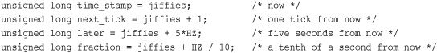
Converting from ticks to seconds is typically reserved for communicating with user-space, as the kernel itself rarely cares about any sort of absolute time.
Note that the jiffies variable is prototyped as unsigned long and that storing it in anything else is incorrect.
The jiffies variable has always been an unsigned long, and therefore 32 bits in size on 32-bit architectures and 64-bits on 64-bit architectures. With a tick rate of 100, a 32-bit jiffies variable would overflow in about 497 days. With HZ increased to 1000, however, that overflow now occurs in just 49.7 days! If jiffies were stored in a 64-bit variable on all architectures, then for any reasonable HZ value the jiffies variable would never overflow in anyone’s lifetime.
For performance and historical reasons—mainly compatibility with existing kernel code—the kernel developers wanted to keep jiffies an unsigned long. Some smart thinking and a little linker magic saved that day.
As you previously saw, jiffies is defined as an unsigned long:
extern unsigned long volatile jiffies;
A second variable is also defined in <linux/jiffies.h>:
extern u64 jiffies_64;
The ld(1) script used to link the main kernel image (arch/x86/kernel/vmlinux.lds.S on x86) then overlays the jiffies variable over the start of the jiffies_64 variable:
jiffies = jiffies_64;
Thus, jiffies is the lower 32 bits of the full 64-bit jiffies_64 variable. Code can continue to access the jiffies variable exactly as before. Because most code uses jiffies simply to measure elapses in time, most code cares about only the lower 32 bits. The time management code uses the entire 64 bits, however, and thus prevents overflow of the full 64-bit value. Figure 11.1 shows the layout of jiffies and jiffies_64.
Figure 11.1. Layout of jiffies and jiffies_64.
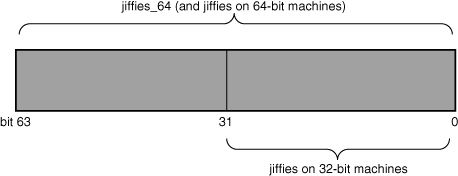
Code that accesses jiffies simply reads the lower 32 bits of jiffies_64. The function get_jiffies_64() can be used to read the full 64-bit value.4 Such a need is rare; consequently, most code simply continues to read the lower 32 bits directly via the jiffies variable.
4
A special function is needed because 32-bit architectures cannot atomically access both 32-bit words in a 64-bit value. The special function locks the jiffies count via the
xtime_lock
lock before reading.
On 64-bit architectures, jiffies_64 and jiffies refer to the same thing. Code can either read jiffies or call get_jiffies_64() as both actions have the same effect.
The jiffies variable, like any C integer, experiences overflow when its value is increased beyond its maximum storage limit. For a 32-bit unsigned integer, the maximum value is 232 – 1. Thus, a possible 4294967295 timer ticks can occur before the tick count overflows. When the tick count is equal to this maximum and it is incremented, it wraps around to zero.
Look at an example of a wraparound:
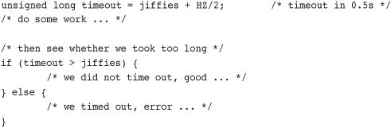
The intention of this code snippet is to set a timeout for some time in the future—for one half second from now, in this example. The code then proceeds to perform some work, presumably poking hardware and waiting for a response. When done, if the whole ordeal took longer than the timeout, the code handles the error as appropriate.
Multiple potential overflow issues are here, but let’s study one of them: Consider what happens if jiffies wrapped back to zero after setting timeout. Then the first conditional would fail because the jiffies value would be smaller than timeout despite logically being larger. Conceptually, the jiffies value should be a large number—larger than timeout. Because it overflowed its maximum value, however, it is now a small value—perhaps only a handful of ticks over zero. Because of the wraparound, the results of the if statement are switched. Whoops!
Thankfully, the kernel provides four macros for comparing tick counts that correctly handle wraparound in the tick count. They are in <linux/jiffies.h>. Listed here are simplified versions of the macros:
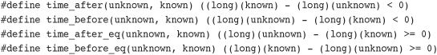
The unknown parameter is typically jiffies and the known parameter is the value against which you want to compare.
The time_after(unknown, known) macro returns true if time unknown is after time known; otherwise, it returns false. The time_before(unknown, known) macro returns true if time unknown is before time known; otherwise, it returns false. The final two macros perform identically to the first two, except they also return true if the parameters are equal.
The timer-wraparound-safe version of the previous example would look like this:
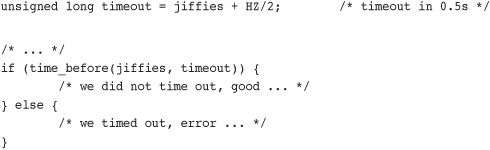
If you are curious as to why these macros prevent errors because of wraparound, try various values for the two parameters. Then assume one parameter wrapped to zero and see what happens.
HZIn kernels earlier than 2.6, changing the value of HZ resulted in user-space anomalies. This happened because values were exported to user-space in units of ticks-per-second. As these interfaces became permanent, applications grew to rely on a specific value of HZ. Consequently, changing HZ would scale various exported values by some constant—without user-space knowing! Uptime would read 20 hours when it was in fact two!
To prevent such problems, the kernel needs to scale all exported jiffies values. It does this by defining USER_HZ, which is the HZ value that user-space expects. On x86, because HZ was historically 100, USER_HZ is 100. The function jiffies_to_clock_t(), defined in kernel/time.c, is then used to scale a tick count in terms of HZ to a tick count in terms of USER_HZ. The expression used depends on whether USER_HZ and HZ are integer multiples of themselves and whether USER_HZ is less than or equal to HZ. If both those conditions are true, and for most systems they usually are, the expression is rather simple:
return x / (HZ / USER_HZ);
A more complicated algorithm is used if the values are not integer multiples.
Finally, the function jiffies_64_to_clock_t() is provided to convert a 64-bit jiffies value from HZ to USER_HZ units.
These functions are used anywhere a value in ticks-per-seconds needs to be exported to user-space. Following is an example:
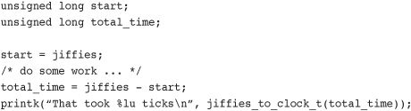
User-space expects the previous value as if HZ=USER_HZ. If they are not equivalent, the macro scales as needed and everyone is happy. Of course, this example is silly: It would make more sense to print the message in seconds, not ticks. For example:
printk("That took %lu seconds\n", total_time / HZ);
Architectures provide two hardware devices to help with time keeping: the system timer, which we have been discussing, and the real-time clock. The actual behavior and implementation of these devices varies between different machines, but the general purpose and design is about the same for each.
The real-time clock (RTC) provides a nonvolatile device for storing the system time. The RTC continues to keep track of time even when the system is off by way of a small battery typically included on the system board. On the PC architecture, the RTC and the CMOS are integrated, and a single battery keeps the RTC running and the BIOS settings preserved.
On boot, the kernel reads the RTC and uses it to initialize the wall time, which is stored in the xtime variable. The kernel does not typically read the value again; however, some supported architectures, such as x86, periodically save the current wall time back to the RTC. Nonetheless, the real time clock’s primary importance is only during boot, when the xtime variable is initialized.
The system timer serves a much more important (and frequent) role in the kernel’s timekeeping. The idea behind the system timer, regardless of architecture, is the same—to provide a mechanism for driving an interrupt at a periodic rate. Some architectures implement this via an electronic clock that oscillates at a programmable frequency. Other systems provide a decrementer: A counter is set to some initial value and decrements at a fixed rate until the counter reaches zero. When the counter reaches zero, an interrupt is triggered. In any case, the effect is the same.
On x86, the primary system timer is the programmable interrupt timer (PIT). The PIT exists on all PC machines and has been driving interrupts since the days of DOS. The kernel programs the PIT on boot to drive the system timer interrupt (interrupt zero) at HZ frequency. It is a simple device with limited functionality, but it gets the job done. Other x86 time sources include the local APIC timer and the processor’s time stamp counter (TSC).
Now that we have an understanding of HZ, jiffies, and what the system timer’s role is, let’s look at the actual implementation of the timer interrupt handler. The timer interrupt is broken into two pieces: an architecture-dependent and an architecture-independent routine.
The architecture-dependent routine is registered as the interrupt handler for the system timer and, thus, runs when the timer interrupt hits. Its exact job depends on the given architecture, of course, but most handlers perform at least the following work:
• Obtain the
xtime_locklock, which protects access tojiffies_64and the wall time value,xtime.
• Acknowledge or reset the system timer as required.
• Periodically save the updated wall time to the real time clock.
• Call the architecture-independent timer routine,
tick_periodic().
The architecture-independent routine, tick_periodic(), performs much more work:
• Increment the
jiffies_64count by one. (This is safe, even on 32-bit architectures, because thextime_locklock was previously obtained.)
• Update resource usages, such as consumed system and user time, for the currently running process.
• Run any dynamic timers that have expired (discussed in the following section).
• Execute
scheduler_tick(), as discussed in Chapter 4.
• Update the wall time, which is stored in
xtime.
• Calculate the infamous load average.
The routine is simple because other functions handle most of the work:
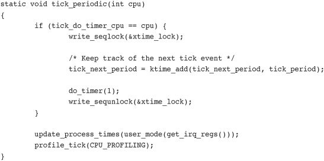
Most of the important work is enabled in do_timer() and update_process_times(). The former is responsible for actually performing the increment to jiffies_64:
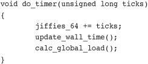
The function update_wall_time(), as its name suggests, updates the wall time in accordance with the elapsed ticks, whereas calc_global_load() updates the system’s load average statistics.
When do_timer() ultimately returns, update_process_times() is invoked to update various statistics that a tick has elapsed, noting via user_tick whether it occurred in user-space or kernel-space:
Recall from tick_periodic() that the value of user_tick is set by looking at the system’s registers:
update_process_times(user_mode(get_irq_regs()));
The account_process_tick() function does the actual updating of the process’s times:
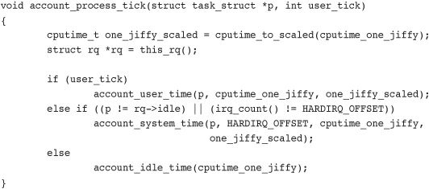
You might realize that this approach implies that the kernel credits a process for running the entire previous tick in whatever mode the processor was in when the timer interrupt occurred. In reality, the process might have entered and exited kernel mode many times during the last tick. In fact, the process might not even have been the only process running in the last tick! This granular process accounting is classic Unix, and without much more complex accounting, this is the best the kernel can provide. It is also another reason for a higher frequency tick rate.
Next, the run_local_timers() function marks a softirq (see Chapter 8, “Bottom Halves and Deferring Work”) to handle the execution of any expired timers. Timers are covered in a following section, “Timers.”
Finally, the scheduler_tick() function decrements the currently running process’s timeslice and sets need_resched if needed. On SMP machines, it also balances the per-processor runqueues as needed. This is discussed in Chapter 4.
The tick_periodic() function returns to the original architecture-dependent interrupt handler, which performs any needed cleanup, releases the xtime_lock lock, and finally returns.
All this occurs every 1/HZ of a second. That is potentially 100 or 1,000 times per second on an x86 machine!
The current time of day (the wall time) is defined in kernel/time/timekeeping.c:
struct timespec xtime;
The timespec data structure is defined in <linux/time.h> as:
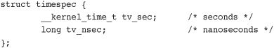
The xtime.tv_sec value stores the number of seconds that have elapsed since January 1, 1970 (UTC). This date is called the epoch. Most Unix systems base their notion of the current wall time as relative to this epoch. The xtime.v_nsec value stores the number of nanoseconds that have elapsed in the last second.
Reading or writing the xtime variable requires the xtime_lock lock, which is not a normal spinlock but a seqlock. Chapter 10, “Kernel Synchronization Methods,” discusses seqlocks.
To update xtime, a write seqlock is required:
write_seqlock(&xtime_lock);
/* update xtime ... */
write_sequnlock(&xtime_lock);
Reading xtime requires the use of the read_seqbegin() and read_seqretry() functions:
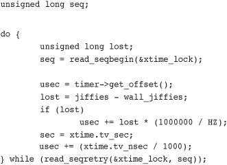
This loop repeats until the reader is assured that it read the data without an intervening write. If the timer interrupt occurred and updated xtime during the loop, the returned sequence number is invalid and the loop repeats.
The primary user-space interface for retrieving the wall time is gettimeofday(), which is implemented as sys_gettimeofday() in kernel/time.c:
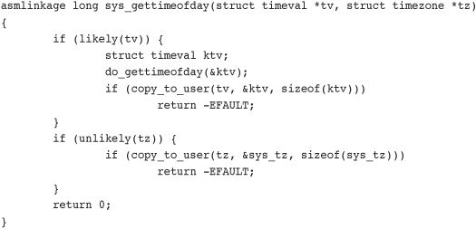
If the user provided a non-NULL tv value, the architecture-dependent do_gettimeofday() is called. This function primarily performs the xtime read loop previously discussed. Likewise, if tz is non-NULL, the system time zone (stored in sys_tz) is returned to the user. If there were errors copying the wall time or time zone back to user-space, the function returns -EFAULT. Otherwise, it returns zero for success.
The kernel also implements the time()5 system call, but gettimeofday() largely supersedes it. The C library also provides other wall time–related library calls, such as ftime() and ctime().
5
Some architectures, however, do not implement
sys_time()
and instead specify that it is emulated in the C library through the use of
gettimeofday().
The settimeofday() system call sets the wall time to the specified value. It requires the CAP_SYS_TIME capability.
Other than updating xtime, the kernel does not make nearly as frequent use of the current wall time as user-space does. One notable exception is in the filesystem code, which stores various timestamps (accessed, modified, and so on) in inodes.
Timers—sometimes called dynamic timers or kernel timers—are essential for managing the flow of time in kernel code. Kernel code often needs to delay execution of some function until a later time. In previous chapters, we looked at using the bottom-half mechanisms, which are great for deferring work until later. Unfortunately, the definition of later is intentionally quite vague. The purpose of bottom halves is not so much to delay work, but simply to not do the work now. What we need is a tool for delaying work a specified amount of time—certainly no less, and with hope, not much longer. The solution is kernel timers.
A timer is easy to use. You perform some initial setup, specify an expiration time, specify a function to execute upon said expiration, and activate the timer. The given function runs after the timer expires. Timers are not cyclic. The timer is destroyed after it expires. This is one reason for the dynamic nomenclature: Timers are constantly created and destroyed, and there is no limit on the number of timers. Timers are popular throughout the entire kernel.
Timers are represented by struct timer_list, which is defined in <linux/timer.h>:
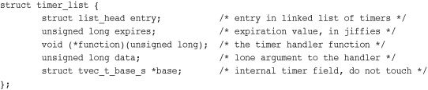
Fortunately, the usage of timers requires little understanding of this data structure. Toying with it is discouraged to keep code forward compatible with changes. The kernel provides a family of timer-related interfaces to make timer management easy. Everything is declared in <linux/timer.h>. Most of the actual implementation is in kernel/timer.c.
The first step in creating a timer is defining it:
struct timer_list my_timer;
Next, the timer’s internal values must be initialized. This is done via a helper function and must be done prior to calling any timer management functions on the timer:
init_timer(&my_timer);
Now you fill out the remaining values as required:
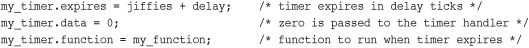
The my_timer.expires value specifies the timeout value in absolute ticks. When the current jiffies count is equal to or greater than my_timer.expires, the handler function my_timer.function is run with the lone argument of my_timer.data. As you can see from the timer_list definition, the function must match this prototype:
void my_timer_function(unsigned long data);
The data parameter enables you to register multiple timers with the same handler, and differentiate between them via the argument. If you do not need the argument, you can simply pass zero (or any other value).
Finally, you activate the timer:
add_timer(&my_timer);
And, voila, the timer is off and running! Note the significance of the expired value. The kernel runs the timer handler when the current tick count is equal to or greater than the specified expiration. Although the kernel guarantees to run no timer handler prior to the timer’s expiration, there may be a delay in running the timer. Typically, timers are run fairly close to their expiration; however, they might be delayed until the first timer tick after their expiration. Consequently, timers cannot be used to implement any sort of hard real-time processing.
Sometimes you might need to modify the expiration of an already active timer. The kernel implements a function, mod_timer(), which changes the expiration of a given timer:
mod_timer(&my_timer, jiffies + new_delay); /* new expiration */
The mod_timer() function can operate on timers that are initialized but not active, too. If the timer is inactive, mod_timer() activates it. The function returns zero if the timer were inactive and one if the timer were active. In either case, upon return from mod_timer(), the timer is activated and set to the new expiration.
If you need to deactivate a timer prior to its expiration, use the del_timer() function:
del_timer(&my_timer);
The function works on both active and inactive timers. If the timer is already inactive, the function returns zero; otherwise, the function returns one. Note that you do not need to call this for timers that have expired because they are automatically deactivated.
A potential race condition that must be guarded against exists when deleting timers. When del_timer() returns, it guarantees only that the timer is no longer active (that is, that it will not be executed in the future). On a multiprocessing machine, however, the timer handler might already be executing on another processor. To deactivate the timer and wait until a potentially executing handler for the timer exits, use del_timer_sync():
del_timer_sync(&my_timer);
Unlike del_timer(), del_timer_sync() cannot be used from interrupt context.
Because timers run asynchronously with respect to the currently executing code, several potential race conditions exist. First, never do the following as a substitute for a mere mod_timer(), because this is unsafe on multiprocessing machines:
del_timer(my_timer)
my_timer->expires = jiffies + new_delay;
add_timer(my_timer);
Second, in almost all cases, you should use del_timer_sync() over del_timer(). Otherwise, you cannot assume the timer is not currently running, and that is why you made the call in the first place! Imagine if, after deleting the timer, the code went on to free or otherwise manipulate resources used by the timer handler. Therefore, the synchronous version is preferred.
Finally, you must make sure to protect any shared data used in the timer handler function. The kernel runs the function asynchronously with respect to other code. Data with a timer should be protected as discussed in Chapters 8 and 9, “An Introduction to Kernel Synchronization.”
The kernel executes timers in bottom-half context, as softirqs, after the timer interrupt completes. The timer interrupt handler runs update_process_times(), which calls run_local_timers():
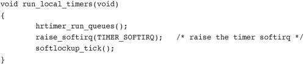
The TIMER_SOFTIRQ softirq is handled by run_timer_softirq(). This function runs all the expired timers (if any) on the current processor.
Timers are stored in a linked list. However, it would be unwieldy for the kernel to either constantly traverse the entire list looking for expired timers, or keep the list sorted by expiration value; the insertion and deletion of timers would then become expensive. Instead, the kernel partitions timers into five groups based on their expiration value. Timers move down through the groups as their expiration time draws closer. The partitioning ensures that, in most executions of the timer softirq, the kernel has to do little work to find the expired timers. Consequently, the timer management code is efficient.
Often, kernel code (especially drivers) needs a way to delay execution for some time without using timers or a bottom-half mechanism. This is usually to enable hardware time to complete a given task. The time is typically quite short. For example, the specifications for a network card might list the time to change Ethernet modes as two microseconds. After setting the desired speed, the driver should wait at least the two microseconds before continuing.
The kernel provides a number of solutions, depending on the semantics of the delay. The solutions have different characteristics. Some hog the processor while delaying—effectively preventing—the accomplishment of any real work. Other solutions do not hog the processor but offer no guarantee that your code will resume in exactly the required time.6
6 Actually, no approach guarantees that the delay will be for exactly the time requested. Some come extremely close, however, and they all promise to wait at least as long as needed. Some just wait longer.
The simplest solution to implement (although rarely the optimal solution) is busy waiting or busy looping. This technique works only when the time you want to delay is some integer multiple of the tick rate or precision is not important.
The idea is simple: Spin in a loop until the desired number of clock ticks pass. For example
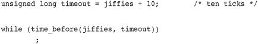
The loop continues until jiffies is larger than delay, which occurs only after 10 clock ticks have passed. On x86 with HZ equal to 1,000, this results in a wait of 10 milliseconds. Similarly
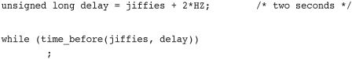
This spins until 2*HZ clock ticks has passed, which is always two seconds regardless of the clock rate.
This approach is not nice to the rest of the system. While your code waits, the processor is tied up spinning in a silly loop—no useful work is accomplished! You rarely want to take this brain-dead approach, and it is shown here because it is a clear and simple method for delaying execution. You might also encounter it in someone else’s not-so-pretty code.
A better solution would be to reschedule your process to allow the processor to accomplish other work while your code waits:
unsigned long delay = jiffies + 5*HZ;
while (time_before(jiffies, delay))
cond_resched();
The call to cond_resched() schedules a new process, but only if need_resched is set. In other words, this solution conditionally invokes the scheduler only if there is some more important task to run. Note that because this approach invokes the scheduler, you cannot make use of it from an interrupt handler—only from process context. All these approaches are best used from process context, because interrupt handlers should execute as quickly as possible. (And busy looping does not help accomplish that goal!) Furthermore, delaying execution in any manner, if at all possible, should not occur while a lock is held or interrupts are disabled.
C aficionados might wonder what guarantee is given that the previous loops even work. The C compiler is usually free to perform a given load only once. Normally, no assurance is given that the jiffies variable in the loop’s conditional statement is even reloaded on each loop iteration. The kernel requires, however, that jiffies be reread on each iteration, as the value is incremented elsewhere: in the timer interrupt. Indeed, this is why the variable is marked volatile in <linux/jiffies.h>. The volatile keyword instructs the compiler to reload the variable on each access from main memory and never alias the variable’s value in a register, guaranteeing that the previous loop completes as expected.
Sometimes, kernel code (again, usually drivers) requires short (smaller than a clock tick) and rather precise delays. This is often to synchronize with hardware, which again usually lists some minimum time for an activity to complete—often less than a millisecond. It would be impossible to use jiffies-based delays, as in the previous examples, for such a short wait. With a timer interrupt of 100Hz, the clock tick is a rather large 10 milliseconds! Even with a 1,000Hz timer interrupt, the clock tick is still one millisecond. Another solution is clearly necessary for smaller, more precise delays.
Thankfully, the kernel provides three functions for microsecond, nanosecond, and millisecond delays, defined in <linux/delay.h> and <asm/delay.h>, which do not use jiffies:
void udelay(unsigned long usecs)
void ndelay(unsigned long nsecs)
void mdelay(unsigned long msecs)
The former function delays execution by busy looping for the specified number of microseconds. The latter function delays execution for the specified number of milliseconds. Recall one second equals 1,000 milliseconds, which equals 1,000,000 microseconds. Usage is trivial:
udelay(150); /* delay for 150 μs */
The udelay() function is implemented as a loop that knows how many iterations can be executed in a given period of time. The mdelay() function is then implemented in terms of udelay(). Because the kernel knows how many loops the processor can complete in a second (see the sidebar on BogoMIPS), the udelay() function simply scales that value to the correct number of loop iterations for the given delay.
My BogoMIPS Are Bigger Than Yours!
The BogoMIPS value has always been a source of confusion and humor. In reality, the BogoMIPS calculation has little to do with the performance of your computer and is primarily used only for the
udelay()andmdelay()functions. Its name is a contraction of bogus (that is, fake) and MIPS (million of instructions per second). Everyone is familiar with a boot message similar to the following (this is on a 2.4GHz 7300-series Intel Xeon):Detected 2400.131 MHz processor.
Calibrating delay loop... 4799.56 BogoMIPSThe BogoMIPS value is the number of busy loop iterations the processor can perform in a given period. In effect, BogoMIPS are a measurement of how fast a processor can do nothing! This value is stored in the
loops_per_jiffyvariable and is readable from/proc/cpuinfo. The delay loop functions use theloops_per_jiffyvalue to figure out (fairly precisely) how many busy loop iterations they need to execute to provide the requisite delay.The kernel computes
loops_per_jiffyon boot viacalibrate_delay()ininit/main.c.
The udelay() function should be called only for small delays because larger delays on fast machines might result in overflow. As a rule, do not use udelay() for delays more than one millisecond in duration. For longer durations, mdelay() works fine. Like the other busy waiting solutions for delaying execution, neither of these functions (especially mdelay(), because it is used for such long delays) should be used unless absolutely needed. Remember that it is rude to busy loop with locks held or interrupts disabled because system response and performance will be adversely affected. If you require precise delays, however, these calls are your best bet. Typical uses of these busy waiting functions delay for a small amount of time, usually in the microsecond range.
schedule_timeout()A more optimal method of delaying execution is to use schedule_timeout(). This call puts your task to sleep until at least the specified time has elapsed. There is no guarantee that the sleep duration will be exactly the specified time—only that the duration is at least as long as specified. When the specified time has elapsed, the kernel wakes the task up and places it back on the runqueue. Usage is easy:
/* set task's state to interruptible sleep */
set_current_state(TASK_INTERRUPTIBLE);
/* take a nap and wake up in "s" seconds */
schedule_timeout(s * HZ);
The lone parameter is the desired relative timeout, in jiffies. This example puts the task in interruptible sleep for s seconds. Because the task is marked TASK_INTERRUPTIBLE, it wakes up prematurely if it receives a signal. If the code does not want to process signals, you can use TASK_UNINTERRUPTIBLE instead. The task must be in one of these two states before schedule_timeout() is called or else the task will not go to sleep.
Note that because schedule_timeout() invokes the scheduler, code that calls it must be capable of sleeping. See Chapters 8 and 9 for discussions on atomicity and sleeping. In short, you must be in process context and must not hold a lock.
schedule_timeout() ImplementationThe schedule_timeout() function is fairly straightforward. Indeed, it is a simple application of kernel timers, so let’s take a look at it:
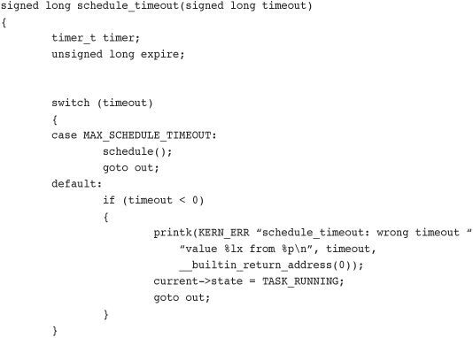
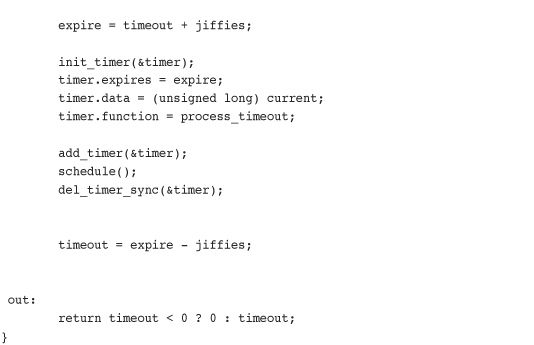
The function creates a timer with the original name timer and sets it to expire in timeout clock ticks in the future. It sets the timer to execute the process_timeout() function when the timer expires. It then enables the timer and calls schedule(). Because the task is supposedly marked TASK_INTERRUPTIBLE or TASK_UNINTERRUPTIBLE, the scheduler does not run the task, but instead picks a new one.
When the timer expires, it runs process_timeout():
void process_timeout(unsigned long data)
{
wake_up_process((task_t *) data);
}
This function puts the task in the TASK_RUNNING state and places it back on the runqueue.
When the task reschedules, it returns to where it left off in schedule_timeout() (right after the call to schedule()). In case the task was awakened prematurely (if a signal was received), the timer is destroyed. The function then returns the time slept.
The code in the switch() statement is for special cases and is not part of the general usage of the function. The MAX_SCHEDULE_TIMEOUT check enables a task to sleep indefinitely. In that case, no timer is set (because there is no bound on the sleep duration), and the scheduler is immediately invoked. If you do this, you must have another method of waking your task up!
Chapter 4 looked at how process context code in the kernel can place itself on a wait queue to wait for a specific event and then invoke the scheduler to select a new task. Elsewhere, when the event finally occurs, wake_up() is called, and the tasks sleeping on the wait queue are awakened and can continue running.
Sometimes it is desirable to wait for a specific event or wait for a specified time to elapse—whichever comes first. In those cases, code might simply call schedule_timeout() instead of schedule() after placing itself on a wait queue. The task wakes up when the desired event occurs or the specified time elapses. The code needs to check why it woke up—it might be because of the event occurring, the time elapsing, or a received signal—and continue as appropriate.
In this chapter, we looked at the kernel’s concept of time and how both wall time and uptime are managed. We contrasted relative time with absolute time and absolute events with periodic events. We then covered time concepts such as the timer interrupt, timer ticks, HZ, and jiffies.
We looked at the implementation of timers and how you can use them in your own kernel code. We finished the chapter with an overview of other methods developers can use to pass time.
Much of the kernel code that you write will require some understanding of time and its passing. With high probability—especially if you hack on drivers—you will need to deal with kernel timers. Reading this chapter is good for more than just passing the time.